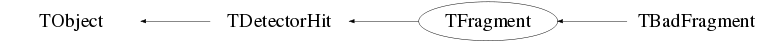

class TFragment: public TDetectorHit
Function Members (Methods)
public:
protected:
| virtual void | TObject::DoError(int level, const char* location, const char* fmt, va_list va) const |
| Bool_t | TDetectorHit::IsChannelSet() const |
| Bool_t | TDetectorHit::IsEnergySet() const |
| Bool_t | TDetectorHit::IsPPGSet() const |
| Bool_t | TDetectorHit::IsTimeSet() const |
| void | TObject::MakeZombie() |
private:
| virtual Bool_t | CheckTObjectHashConsistency() const |
Data Members
public:
| static TObject::(anonymous) | TObject::kBitMask | |
| static TObject::EStatusBits | TObject::kCanDelete | |
| static TObject::EStatusBits | TObject::kCannotPick | |
| static TObject::EStatusBits | TObject::kHasUUID | |
| static TObject::(anonymous) | TObject::kInconsistent | |
| static TObject::EStatusBits | TObject::kInvalidObject | |
| static TObject::(anonymous) | TObject::kIsOnHeap | |
| static TObject::EStatusBits | TObject::kIsReferenced | |
| static TObject::EStatusBits | TObject::kMustCleanup | |
| static TObject::EStatusBits | TObject::kNoContextMenu | |
| static TObject::(anonymous) | TObject::kNotDeleted | |
| static TObject::EDeprecatedStatusBits | TObject::kObjInCanvas | |
| static TObject::(anonymous) | TObject::kOverwrite | |
| static TObject::(anonymous) | TObject::kSingleKey | |
| static TObject::(anonymous) | TObject::kWriteDelete | |
| static TObject::(anonymous) | TObject::kZombie |
protected:
| UInt_t | TDetectorHit::fAddress | address of the the channel in the DAQ. |
| static TVector3 | TDetectorHit::fBeamDirection | ! |
| TTransientBits<UChar_t> | TDetectorHit::fBitFlags | |
| Float_t | TDetectorHit::fCfd | CFD time of the Hit |
| Float_t | TDetectorHit::fCharge | charge collected from the hit |
| Short_t | TDetectorHit::fKValue | integration value. |
| static TPPG* | TDetectorHit::fPPG | |
| Double_t | TDetectorHit::fTime | ! Calibrated Time of the hit |
| Long64_t | TDetectorHit::fTimeStamp | Timestamp given to hit in ns |
| vector<Short_t> | TDetectorHit::fWaveform |
private:
| UInt_t | fAcceptedChannelId | Accepted threshold crossing counter for a channel |
| Int_t | fCcLong | ! Long integration over waveform tail from 4G (saved in separate branch) |
| Int_t | fCcShort | ! Short integration over waveform peak from 4G (saved in separate branch) |
| UInt_t | fChannelId | Threshold crossing counter for a channel |
| Int_t | fDaqId | Daq ID |
| time_t | fDaqTimeStamp | Timestamp of the Daq event |
| UShort_t | fDeadTime | Deadtime from trigger |
| UShort_t | fDetectorType | Detector Type (PACES,HPGe, etc.) |
| Long64_t | fEntryNumber | ! Entry number in fragment tree |
| Int_t | fFragmentId | Channel Trigger ID ??? not needed anymore ??? |
| UShort_t | fModuleType | Data Type (GRIF-16, 4G, etc.) |
| Int_t | fNetworkPacketNumber | Network packet number |
| static Long64_t | fNumberOfFragments | |
| Short_t | fNumberOfPileups | Number of piled up hits 1-3 |
| UShort_t | fNumberOfWords | ! Number of non-waveform words in fragment, only used for check while parsing the fragment |
| TPPG* | fPPG | ! Programmable pattern generator value |
| Int_t | fTriggerBitPattern | MasterFilterPattern in Griffin DAQ |
| vector<Long_t> | fTriggerId | MasterFilterID in Griffin DAQ |
| Int_t | fZc | ! Zero-crossing value from 4G (saved in separate branch) |
Class Charts



Function documentation
double GetTZero() const
Short_t GetChannelNumber() const
bool IsDetector(const char* prefix, Option_t* opt = "CA") const
Checks to see if the current fragment constains the same "prefix", for example "GRG" The option determines whether the channel should be: - C : The core of a segmented detector - S : The segments of a segmented detector - A : Low gain output of a detector - B : High gain output of a detectora If C or S are not given, default to C If A or B are not given, default to A Note that multiple options add to the output, so "CAB" would return the core with both high and low gain One should eventually add N,P,T options as well.
Int_t GetSharcMesyBoard() const
void SetNumberOfFilters(UShort_t )
Long_t GetTriggerId(size_t iter = 0) const